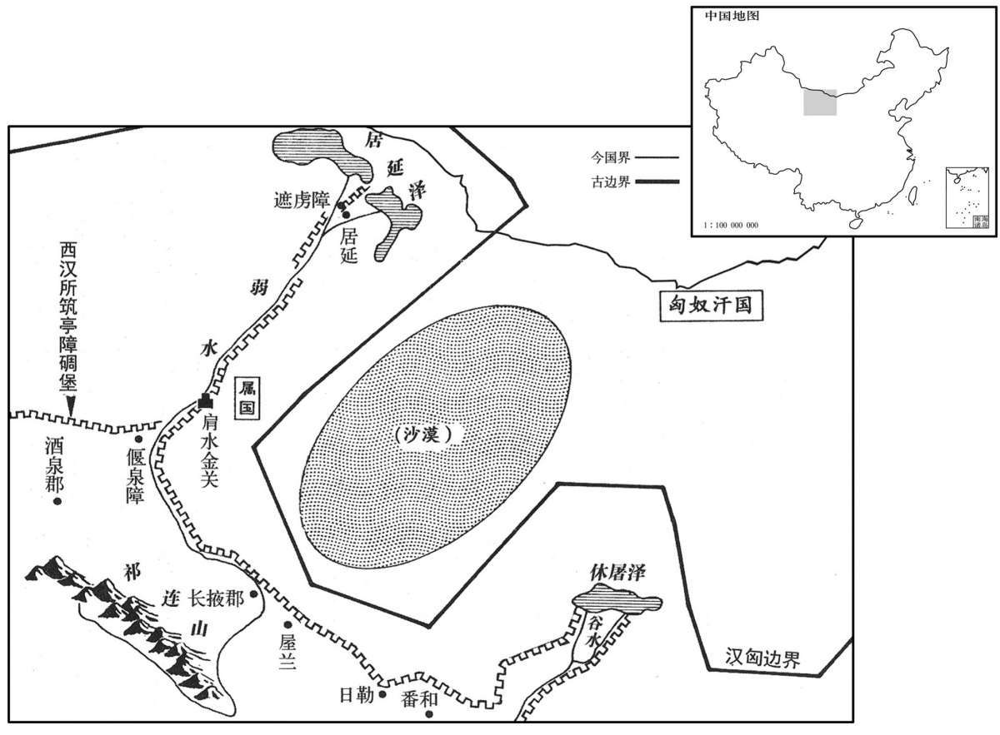

公元前78年资治通鉴：本年记事、原文与白话对照
按原书编年位置阅读；追叙和史论不等于本年发生的事件。白话采用所据译本，缺译不以生成译文补齐。
卷23 · 本年记事
公元前78年 · 汉孝昭皇帝元凤三年
元凤三年〔（癸卯、前七八）〕

本年形势与背景参考图
春，正月，泰山有大石自起立；上林有柳树枯僵自起生，〔僵，居良翻，仆也。〕有虫食其叶成文，曰“公孙病已立”。〔此为宣帝兴于民间之符。〕符节令鲁国眭弘上书，〔班表：符节令属少府，秩六百石。续汉志曰：为符节台率，主符节事。汉改秦薛郡为鲁国，属豫州；唐兖州地。师古曰：眭，息随翻。今河、朔犹有此姓。〕言：“大石自立，僵柳复起，〔复，扶又翻；下同。〕当有匹庶为天子者。枯树复生，故废之家公孙氏当复兴乎？汉家承尧之后，〔班赞曰：春秋晋史蔡墨有言：“陶唐既衰，其后有刘累，学扰龙，事孔甲，范氏其后也。”而范宣子亦曰：“祖自虞以上为陶唐氏，在夏为御龙氏，在商为豕韦氏，在周为唐杜氏，晋主夏盟为范氏。”范氏为晋士师，鲁文公世奔秦，后归于晋；其处者为刘氏。刘向云：战国时刘氏自秦获于魏；秦灭魏，迁大梁，都于丰。故周市说雍齿曰：“丰，故梁徙也。”是以颂高祖云：“汉帝本系，出自唐帝；降及于周，在秦作刘；涉魏而东，遂为丰公。”丰公盖太上皇父。及高祖即位，置祠祀官，则有秦、晋、梁、荆之巫，世祠天地，缀之以祀，岂不信哉！由是言之，汉承尧运，协于火德，得天统矣。〕有传国之运，当求贤人禅帝位，退自封百里，以顺天命。”弘坐设妖言惑众伏诛。
春季，正月，泰山上有一块大石自己立了起来；上林苑中有一棵枯死倒地的柳树自己立起复活，又有虫子在其树叶上啃咬出“公孙病已立”的字样。担任符节令的鲁国人眭弘，上书说：“大石自己站立，枯倒柳树复起，当有一位平民百姓成为天子。枯树复活，是不是预示着以前被废黜的公孙氏家族应当复兴呢？汉天子为帝尧的后代，有将国家传给别人的命运，应当访求贤明的人，将帝位禅让给他，自己退下，做一个拥有一百里封地的列侯，以顺应天命。”眭弘以制造妖言、蛊惑人心的罪名被处死。
匈奴单于使犁污王窥边，〔据王莽时使译出塞诱呼右犁污王咸，则犁污王所居地盖近塞下也。〕言酒泉、张掖兵益弱，出兵试击，冀可复得其地。时汉先得降者，闻其计，天子诏边警备。后无几，〔几，居岂翻。〕右贤王、犁污王四千骑分三队，入日勒、屋兰、番和。〔班志，三县皆属张掖郡。贤曰：日勒故城在今甘州删丹县东南。师古曰：番，音盘。〕张掖太守、属国都尉〔续汉志，张掖属国都尉治居延县。守，式又翻。〕发兵击，大破之，得脱者数百人。属国义渠王射杀犁污王，〔义渠王，属国义渠胡之君长。射，而亦翻。〕赐黄金二百斤，马二百匹，因封为犁污王。自是后，匈奴不敢入张掖。
匈奴单于派犁污王刺探汉朝边防情况。犁污王回报说，酒泉、张掖一带的汉朝兵力日益衰弱，如果派兵作试探性攻击，有希望收复旧有地区。此时，汉朝已先从归降的匈奴人口中听到这个计谋，汉昭帝便下诏命边塞地区加强戒备。没过多久，匈奴右贤王、犁污王率领骑兵四千分为三队，侵入日勒、屋兰、番和三县。汉朝张掖太守、属国都尉发兵反击，匈奴军大败，仅数百人逃脱，属国的义渠部落王将匈奴犁污王射死，汉朝赏赐给他黄金二百斤，马二百匹，并因此封他为犁污王。从此以后，匈奴不敢侵犯张掖。
燕、盖之乱，〔燕王、盖主也。燕，于贤翻。盖，古盍翻。〕桑弘羊子迁亡，过父故吏侯史吴〔侯史，姓也。吴，其名也。晋武帝时有侯史光。过，古禾翻。〕后迁捕得，伏法。会赦，侯史吴自出系狱。廷尉王平、〔【章：甲十五行本“平”下有“与”字；乙十一行本同；孔本同。】〕少府徐仁杂治反事，皆以为“桑迁坐父谋反而侯史吴臧之，〔治，直之翻；下同。臧，读曰藏。〕非匿反者，乃匿为随者也”，〔言桑迁但随坐耳，非自反也。〕即以赦令除吴罪。后侍御史治实，〔师古曰：重核治其事也。〕以“桑迁通经术，知父谋反而不谏争，〔争，与诤同。〕与反者身无异。侯史吴故三百石吏，首匿迁，〔师古曰：首匿者，言身为谋首而藏匿人也。〕不与庶人匿随从者等，吴不得赦。”奏请覆治，〔此深文傅致吴之罪。从，才用翻。〕劾廷尉、少府纵反者。〔劾，户概翻。师古曰：纵，放也。〕少府徐仁，即丞相车千秋女婿也，〔车千秋，即田千秋。汉以其年老，得乘小车入殿中，因呼为车丞相。〕故千秋数为侯史吴言；〔数，所角翻。〕恐大将军光不听，千秋即召中二千石、博士会公车门，〔公车门，即未央宫北阙门也。〕议问吴法。〔师古曰：于法律之中，吴当得何罪。〕议者知大将军指，皆执吴为不道。明日，千秋封上众议。〔上，时掌翻。〕光于是以千秋擅召中二千石以下，外内异言，〔张晏曰：外则去疾欲尽，内则为其婿也。师古曰：非也；外内，谓内朝及外朝也。〕遂下廷尉平、少府仁狱。〔下，遐嫁翻。〕朝廷皆恐丞相坐之。太仆杜延年奏记光曰：“吏纵罪人，有常法。今更诋吴为不道，〔师古曰：诋，诬也。〕恐于法深。又，丞相素无所守持而为好言于下，尽其素行也。〔师古曰：言非故有所执持，但其素行好与在下人言议耳。〕至擅召中二千石，甚无状。〔师古曰：无善状也。〕延年愚以为丞相久故及先帝用事，〔言在位已久，是为故旧，又尝及相先帝而任事也。〕非有大故，不可弃也。间者民颇言狱深，吏为峻诋；今丞相所议，又狱事也，如是以及丞相；恐不合众心，群下讙哗，〔讙，许爰翻。〕庶人私议，流言四布。延年窃重将军失此名于天下也。”〔师古曰：重，犹难也，以此为重事也。〕光以廷尉、少府弄法轻重，卒下之狱。〔卒，子恤翻。〕夏，四月，仁自杀，平与左冯翊贾胜胡皆要斩。〔内史，周官；秦因之；景帝二年，分置左内史；武帝更名左冯翊。要，与腰同。〕而不以及丞相，终与相竟。〔师古曰：谓终丞相之身无贬黜也。余谓言与千秋共事终其身。〕延年论议持平，合和朝廷，皆此类也。
燕王刘旦和盖长公主等人谋反时，桑弘羊之子桑迁出逃，曾投靠过桑弘羊从前的部下侯史吴。后桑迁被逮捕处死。时逢大赦，侯史吴投案自首囚禁在监狱。廷尉王平、少府徐仁共同负责审理谋反案件，都认为“桑迁受其父谋反的牵连，侯史吴窝藏他，并不是窝藏谋反者，而是窝藏连坐者”，于是按大赦令赦免了侯史吴之罪。后侍御史重新查处此事，认为“桑迁精通经典，明知其父背叛朝廷，却不加劝阻抗争，本身与谋反者并无两样。侯史吴原为三百石官吏，主谋窝藏桑迁，与一般百姓窝藏连坐者不同，侯史吴不能赦免。”奏请朝廷重新处治侯史吴之罪，并弹劾廷尉、少府开脱谋反者。少府徐仁是丞相田千秋的女婿，所以田千秋几次为侯史吴说情，他怕大将军霍光不听，便在公车门召集中二千石官及博士官，商议应按法律判侯史吴什么罪名。参与商议的人知道大将军的意向，所以一致指控侯史吴为大逆不道。第二天，田千秋将众人的意见上奏朝廷。于是霍光因田千秋擅自召集中二千石及以下官员，朝内、朝外言论不一，将廷尉王平、少府徐仁逮捕入狱。朝廷上下都恐怕丞相会受到牵连。太仆杜延年致书霍光说：“官吏放纵罪人，有通常的处罚方法。如今进而诋毁侯史吴为大逆不道，只怕从法律上说是太过分了。再说，丞相崐平日并没有什么成见，而是一向爱为下面的人说情；至于擅自召集中二千石官员，则十分不对。但我觉得丞相在位已久，又是先帝任用的人，除非有什么重大过失，否则不可废弃。近来，不少百姓们说刑罚过重，官吏们执法苛刻，罗织罪名。而今丞相商议的又是有关刑罚之事，如果因此案而连累丞相，恐怕与民心相背，势必造成属下喧哗，小民私议，流言四布。我怕将军因此事而在天下人面前名声受损。”霍光认为廷尉、少府玩弄法律，终于还是将他们下狱治罪。夏季，四月，徐仁在狱中自杀，王平与左冯翊贾胜胡都被腰斩。丞相田千秋则未受牵连，终于与霍光共事到底。杜延年议论公平，使朝廷合睦，其所作所为，都类似于此。
冬，辽东乌桓反。初，冒顿破东胡，东胡余众散保乌桓及鲜卑山为二族，〔辽东郡属幽州，唐尝置安东都护府于其地。东胡破见十一卷高祖六年。后汉书：乌桓之地在丁零西南、乌孙东北。武帝遣霍去病击破匈奴左地，因徙乌桓于上谷、渔阳、右北平、辽东、辽西五郡塞外，为汉侦察匈奴动静。其大人岁一朝见。于是始置护乌桓校尉，秩比二千石。鲜卑先远窜于辽东塞外，与乌桓相接，未尝通中国；至后汉稍徙辽西塞外，始为中国患。〕世役属匈奴。武帝击破匈奴左地，因徙乌桓于上谷、渔阳、右北平、辽东塞外，〔上谷、渔阳、北平皆属幽州。上谷，唐妫州。渔阳，唐檀、蓟州。北平，唐平州之地。〕为汉侦察匈奴动静。〔为，于伪翻。侦，丑郑翻，又丑贞翻：候也。〕置护乌桓校尉监领之，〔监，古衔翻。〕使不得与匈奴交通。至是，部众渐强，遂反。
冬季，辽东乌桓部落反叛。当初，匈奴冒顿单于击败东胡族，东胡残余部众分别占据乌桓及鲜卑山，形成了两个部族，世代臣服于匈奴。汉武帝击破匈奴左翼地区，将乌桓迁徙到上谷、渔阳、右北平和辽东的塞外地区，令其为汉朝侦察匈奴动静。汉朝还设置了护乌桓校尉一官，负责对乌桓人的监督和管辖，使他们不能与匈奴建立联系。至此，乌桓势力逐渐强大起来，于是起兵反叛汉朝。
先是，匈奴三千余骑入五原，〔五原郡属并州。先，悉荐翻。〕杀略数千人；后数万骑南旁塞猎，〔旁，步浪翻。〕行攻塞外亭障，略取吏民去。是时汉边郡烽火候望精明，匈奴为边寇者少利，希复犯塞。〔少，诗照翻。复，扶又翻；下同。〕汉复得匈奴降者，言乌桓尝发先单于冢，匈奴怨之，方发二万骑击乌桓。霍光欲发兵邀击之，〔师古曰：邀迎而击之。〕以问护军都尉赵充国，〔护军都尉，秦官；武帝以属大司马，此时盖属大将军也。〕充国以为：“乌桓间数犯塞，〔师古曰：间，即中间也。犹言比日也。数，所角翻。〕今匈奴击之，于汉便。又匈奴希寇盗，北边幸无事，蛮夷自相攻击而发兵要之，〔要，与邀同。〕招寇生事，非计也！”光更问中郎将范明友，明友言可击，于是拜明友为度辽将军，〔度辽将军，盖使之度辽水以伐乌桓。至后汉，遂以为将军之号以护匈奴。〕将二万骑出辽东。匈奴闻汉兵至，引去。初，光诫明友：“兵不空出，即后匈奴，遂击乌桓。”〔师古曰：后匈奴者，言兵迟后，邀匈奴不及。后，户遘翻。〕乌桓时新中匈奴兵，〔师古曰：为匈奴所中伤。中，竹仲翻。〕明友既后匈奴，因乘乌桓敝，击之，斩首六千余级，获三王首。匈奴由是恐，不能复出兵。
先前，匈奴骑兵三千余人侵入五原，杀掠数千人；后又派骑兵数万南下，沿着汉朝边塞移动，一路进攻汉朝设于塞外的堡垒，掳掠边塞官吏和百姓而去。当时，汉朝边疆各郡的烽火报警设施严密，匈奴扰边没有什么收获，所以很少再来侵犯。后汉朝又获得归降的匈奴人，得知乌桓人曾经挖掘单于祖先的坟墓，引起匈奴的怨恨，正派出二万骑兵袭击乌桓。霍光打算发兵迎击匈奴军队，便询问护军都尉赵充国的意见。赵充国认为：“乌桓连续几次进犯边塞，如今匈奴袭击他们，对我们很有利。再者匈奴很少前来侵扰，我国北部边疆所幸无事。蛮夷之族自相攻击，而我们却发兵迎战，招他们前来生事，这不是好计策！”霍光又向中郎将范明友询问，范明友说可以迎击，于是任命范明友为度辽将军，率领骑兵二万从辽东出塞，迎击匈奴军。匈奴得到汉军出塞的消息后，撤退而去。当初，霍光曾告诫范明友说：“大军不可空手而还，如落在匈奴军队后面，便袭击乌桓。”乌桓当时刚刚受到匈奴军的打击，范明友既然没能追上匈奴，便乘乌桓疲惫之机发动攻击，斩杀六千余人，取得乌桓三名首领的人头。匈奴从此大为惊恐，不能再向汉朝出兵。